From WPF to Avalonia: Taking ezZip to macOS從 WPF 到 Avalonia：將 ezZip 帶到 macOSWPF에서 Avalonia로, ezZip을 macOS까지WPFからAvaloniaへ、ezZipをmacOSまで
ezZip is a desktop utility for compressing and extracting files, used by tens of thousands of people every day. It started as a Windows-only app built with WPF. It couldn't run on Mac, and even on Windows it required a separate .NET 8 desktop runtime installation. To make it usable on Mac while keeping the existing workflow, I started moving it to Avalonia UI in spring 2026.
ezZip 是一款用於壓縮與解壓縮檔案的桌面工具程式，每天有數萬人使用。它最初是以 WPF 開發、僅支援 Windows 的應用程式，無法在 Mac 上執行，即使在 Windows 上也需要另外安裝 .NET 8 Desktop 執行階段。為了在維持既有使用流程的同時也能在 Mac 上使用，我從 2026 年春季開始將它移植到 Avalonia UI。
ezZip은 파일을 압축하고 푸는 데스크톱 유틸리티로, 매일 수만 명이 이용하고 있습니다. 처음에는 WPF로 만든 Windows 전용 앱이었습니다. Mac에서는 사용할 수 없었고, Windows에서도 .NET 8 데스크톱 런타임을 따로 설치해야 했습니다. 기존 사용 흐름을 유지하면서 Mac에서도 쓸 수 있도록, 2026년 봄부터 Avalonia UI로 옮기기 시작했습니다.
ezZipは、ファイルを圧縮・解凍するデスクトップ用ユーティリティで、毎日数万人に利用されています。当初はWPFで作られたWindows専用アプリでした。Macでは使えず、Windowsでも.NET 8デスクトップランタイムを別途インストールする必要がありました。これまでの使い慣れた操作感を保ちながらMacでも使えるよう、2026年春からAvalonia UIへの移植を始めました。
Today, a single codebase on Avalonia UI 12.1.3 and .NET 10 produces both the Windows and macOS editions, compiled with Native AOT to run standalone without any external .NET runtime. The main window keeps the same set of features, and on Mac I made the Finder context menu and toolbar, progress gauges on file icons, the Dock progress bar, and menu bar shortcuts available. Virus scanning before extraction remains Windows-only for now. The Windows and macOS editions are nearly complete; iOS and Android work is planned for next year, and Linux is under consideration at the company level.
如今，單一程式碼基底以 Avalonia UI 12.1.3 與 .NET 10 同時產出 Windows 與 macOS 版本，兩者皆以 Native AOT 編譯，無需外部 .NET 執行階段即可執行。主視窗的功能組成維持不變，在 Mac 上則可以使用 Finder 的右鍵選單與工具列、檔案圖示上的進度指示、Dock 進度列，以及選單列的快速鍵。解壓縮前的防毒掃描目前仍僅支援 Windows。Windows 與 macOS 版本已接近完成；iOS 與 Android 預計於明年著手，Linux 則在公司層級評估中。
지금은 Avalonia UI 12.1.3과 .NET 10 기반의 코드 한 벌로 Windows와 macOS 버전을 만들고, 두 버전 모두 Native AOT로 컴파일해 별도의 .NET 런타임 없이 실행합니다. 메인 창의 기능 구성은 유지하되, Mac에서는 Finder 우클릭 메뉴와 툴바, 파일 아이콘의 진행 게이지, Dock 진행 막대, 메뉴 바 단축키를 사용할 수 있게 했습니다. 압축 풀기 전 바이러스 검사는 아직 Windows에서만 지원합니다. Windows와 macOS 버전은 거의 완성됐고, 내년에는 iOS와 Android를 작업할 예정이며 Linux도 회사 차원에서 검토 중입니다.
現在は、Avalonia UI 12.1.3と.NET 10をベースにした一つのコードからWindows版とmacOS版をビルドし、どちらもNative AOTでコンパイルして、別途.NETランタイムを用意せずに実行しています。メインウィンドウの機能構成は維持しつつ、MacではFinderの右クリックメニューとツールバー、ファイルアイコンの進捗ゲージ、Dockの進捗バー、メニューバーのショートカットを使えるようにしました。解凍前のウイルス検査は、現時点ではWindowsのみの対応です。Windows版とmacOS版はほぼ完成しており、来年はiOSとAndroidに取り組む予定で、Linuxも会社として検討しています。
I worked alone, using several AI services, and ported a WPF program of about 62,000 lines over about 4.5 months. This article covers the parts I moved over as they were, the parts I redesigned, and the problems I ran into during the port and how I solved them. It also covers the work I left to AI and the points where a person had to make the decision.
我運用多個 AI 服務獨自作業，花了約 4.5 個月移植約 62,000 行規模的 WPF 程式。本文整理哪些部分沿用既有實作、哪些部分重新設計，以及移植過程中遇到的問題與解決方式，也會談到交給 AI 的工作與需要由人判斷的地方。
혼자서 여러 AI 서비스를 활용해 작업했고, 약 62,000줄 규모의 WPF 프로그램을 약 4.5개월에 걸쳐 이식했습니다. 이 글에서는 기존 구현을 그대로 옮긴 부분과 다시 설계한 부분, 이식 중 겪은 문제와 해결 과정을 정리합니다. AI에 맡긴 작업과 사람이 판단해야 했던 지점도 함께 다룹니다.
複数のAIサービスを活用して1人で作業し、約62,000行規模のWPFプログラムを約4.5か月かけて移植しました。本稿では、既存の実装をそのまま移した部分と設計し直した部分、移植中に直面した問題とその解決過程をまとめます。AIに任せた作業と、人が判断しなければならなかった点についても取り上げます。
Results first先看結果결과부터 보면まず結果から
The first thing I tried to keep during the port was the screens and task order that existing users were used to. Comparing the Windows screens below, the main window's features and their layout are almost unchanged after the framework changed from WPF to Avalonia UI. The settings window also keeps the same layout, as shown at the bottom of FIG A.
移植時最優先的目標，是保留使用者熟悉的介面與操作流程。如下方 Windows 上的比較所示，將框架從 WPF 換成 Avalonia UI 後，主視窗的功能組成與配置幾乎維持原樣。設定視窗也維持了原有結構，如 FIG A 下排所示。
이식하면서 가장 먼저 지키려 한 것은 기존 사용자가 익숙한 화면과 작업 순서였습니다. 아래의 Windows 화면을 비교하면, WPF에서 Avalonia UI로 프레임워크를 바꾼 뒤에도 메인 창의 기능 구성과 배치는 거의 그대로입니다. 설정 창도 같은 구성을 유지했으며, FIG A의 하단에서 확인할 수 있습니다.
移植にあたって最優先したのは、既存ユーザーが慣れ親しんだ画面と操作の流れを守ることでした。下のWindows版の画面を比べると、WPFからAvalonia UIへフレームワークを移行した後も、メインウィンドウの機能構成と配置はほぼそのままです。設定画面も同じ構成を維持しており、FIG Aの下段で確認できます。
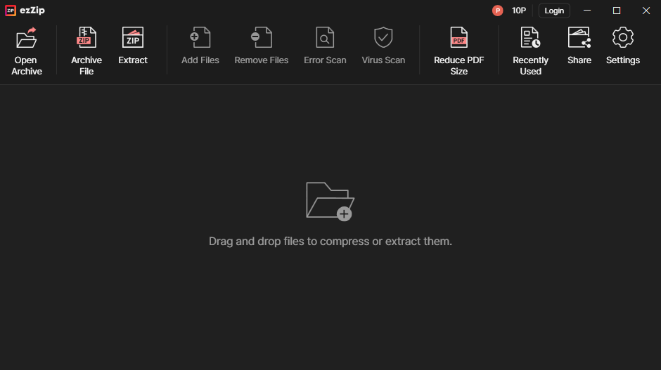
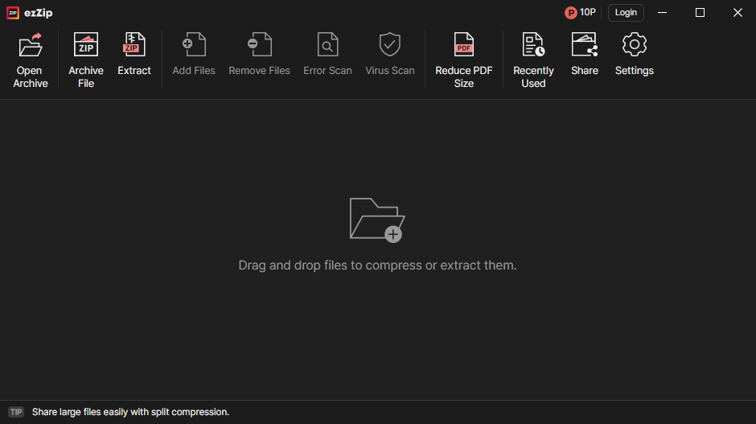
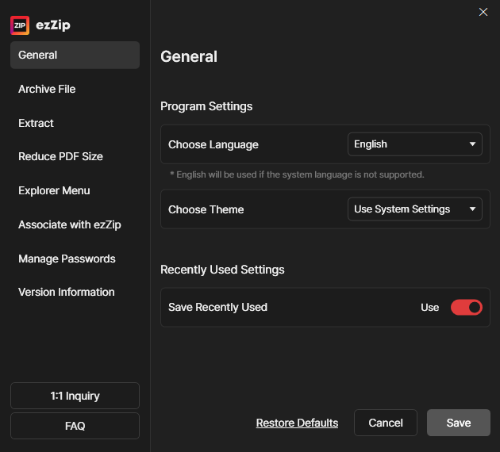
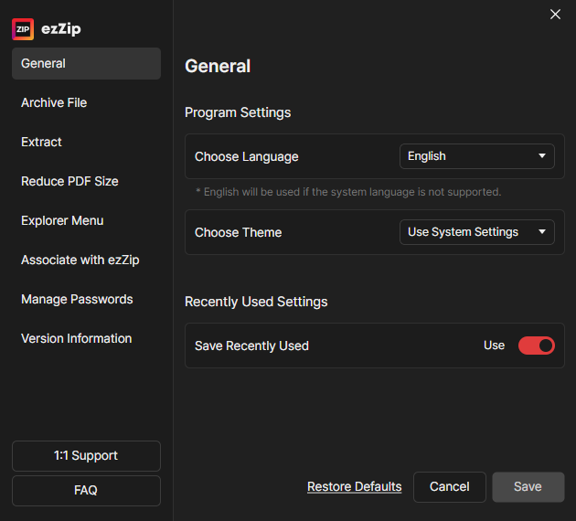
Comparing the toolbar up close makes this clearer. I kept the order and grouping of the 11 functions, from opening an archive to settings, so existing users do not have to learn the menu positions again. However, the 'Compress' and 'Extract' icons, which had been swapped in the WPF version, are corrected in the Avalonia UI version.
放大工具列比較會更清楚。從開啟壓縮檔到設定，我保留了十一項功能的順序與分組，讓既有使用者不必重新熟悉選單位置。不過，WPF 版中互相對調的「壓縮」與「解壓縮」圖示，已在 Avalonia UI 版中修正。
도구 모음을 확대해 비교하면 더 분명합니다. 압축 파일 열기부터 설정까지 11개 기능의 순서와 묶음을 유지해, 기존 사용자가 메뉴 위치를 다시 익히지 않아도 되도록 했습니다. 다만 WPF 버전에서 서로 뒤바뀌어 있던 ‘압축하기’와 ‘압축 풀기’ 아이콘은 Avalonia UI 버전에서 바로잡았습니다.
ツールバーを拡大して比べると、さらにはっきりします。圧縮ファイルを開く操作から設定まで、11の機能の順序とまとまりを維持し、既存ユーザーがメニューの位置を覚え直さなくて済むようにしました。ただし、WPF版で入れ替わっていた「圧縮」と「解凍」のアイコンは、Avalonia UI版で正しく直しました。
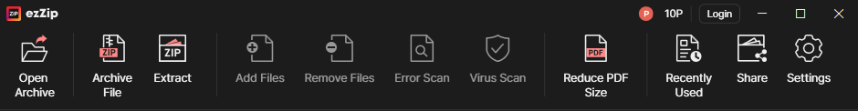
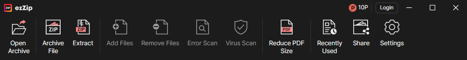
Extending to Finder and Dock on Mac在 Mac 上延伸至 Finder 與 DockMac에서는 Finder와 Dock까지MacではFinderとDockまで
The macOS version uses the same main screen, but the way tasks are started and progress is checked from outside the app follows the Mac. Compression can be started from the Finder context menu and toolbar, and progress can be seen on file icons and in the Dock. Mac shortcuts are mapped to the menu bar.
macOS 版也使用相同的主畫面，但從應用程式外開始作業、查看進度的方式則配合 Mac 調整。可以從 Finder 的右鍵選單與工具列開始壓縮，並在檔案圖示與 Dock 上查看進度。選單列也對應了 Mac 的快速鍵。
macOS 버전도 같은 메인 화면을 사용하지만, 앱 밖에서 작업을 시작하고 진행 상황을 확인하는 방식은 Mac에 맞췄습니다. Finder의 우클릭 메뉴와 툴바에서 압축 작업을 시작하고, 파일 아이콘과 Dock에서 진행 상황을 볼 수 있습니다. 메뉴 바에는 Mac 단축키를 연결했습니다.
macOS版も同じメイン画面を使いますが、アプリの外から作業を始めたり進捗を確認したりする方法はMacに合わせました。Finderの右クリックメニューとツールバーから圧縮を開始でき、ファイルアイコンとDockで進捗を確認できます。メニューバーにはMacのショートカットを割り当てました。
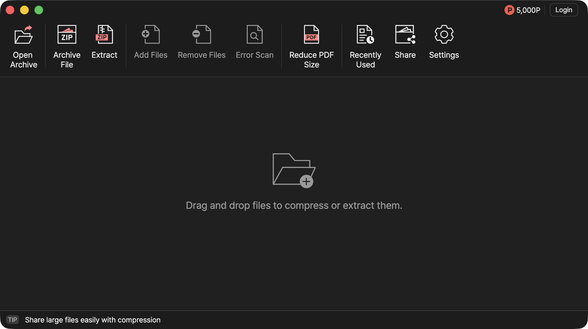
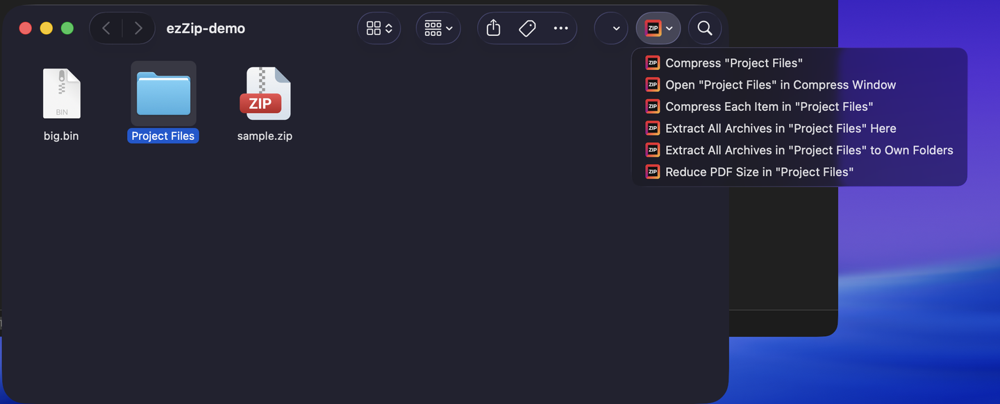
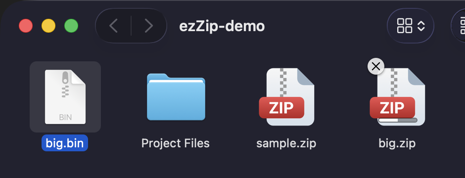
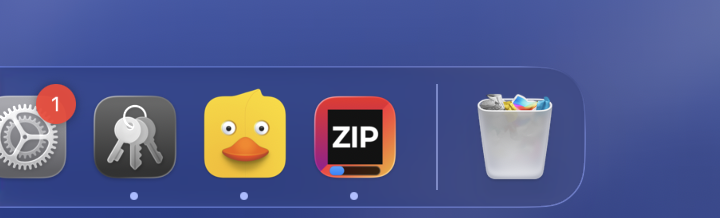
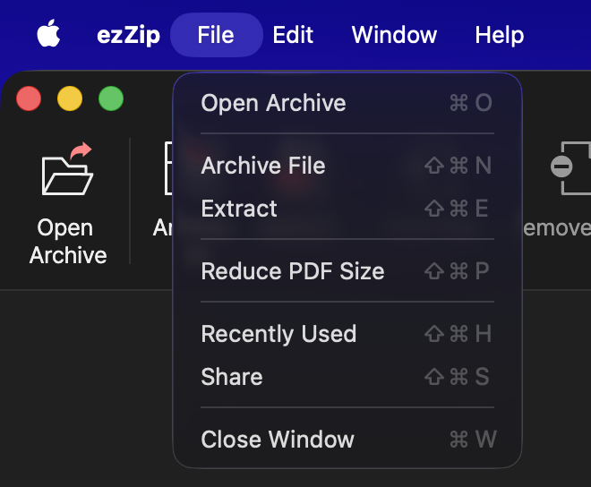
Faster execution behind the same interface介面不變，執行時間縮短화면을 유지하면서 줄인 실행 시간画面はそのままに、実行時間を短縮
The screen layout stayed the same, but the internal implementation changed considerably. In addition to Native AOT and UI display improvements, I also reworked the compression and extraction engine, and window launch, compression and extraction times measured on the same PC went down. The chart below separates the contribution of the app port from that of the engine improvements. The comparison method and test conditions are folded below the chart.
畫面組成維持不變，內部實作則有很大的改變。除了 Native AOT 與 UI 顯示方面的改善，我也調整了壓縮與解壓縮引擎；在同一台電腦上比較，視窗顯示與壓縮、解壓縮的作業時間都縮短了。下圖分別列出應用程式移植與引擎改善的貢獻率。比較方法與量測條件收合在圖表下方。
기존 화면 구성은 유지하되, 내부 구현은 크게 달라졌습니다. Native AOT와 UI 표시 관련 개선에 더해 압축·해제 엔진도 손봤고, 같은 PC에서 비교한 창 표시와 압축·해제 작업 시간이 줄었습니다. 아래에서는 앱 이식과 엔진 개선의 기여율을 구분했습니다. 비교 방법과 측정 조건은 그래프 아래에 접어 두었습니다.
画面構成は維持しつつ、内部の実装は大きく変わりました。Native AOTやUI表示の改善に加えて圧縮・解凍エンジンにも手を入れ、同一PCで比較したウィンドウ表示と圧縮・解凍の処理時間が短縮されました。下図では、アプリ移植とエンジン改善の寄与率を分けて示しています。比較方法と測定条件はグラフの下に折りたたんでいます。
Avalonia: Porting gains including Native AOT and faster UI display (estimated)
Engine: Compression and extraction engine improvements
Avalonia：Native AOT、UI 顯示速度改善等應用程式移植的效果（估計）
引擎：壓縮與解壓縮引擎的改善效果
Avalonia: Native AOT·UI 표시 속도 개선 등 앱 이식 효과(추정)
엔진: 압축·해제 엔진 개선 효과
Avalonia: Native AOTやUI描画速度の改善など、アプリ移植による効果（推定）
エンジン: 圧縮・解凍エンジンの改善効果
Window Launch視窗顯示창 표시ウィンドウ表示
Avalonia 100% · Engine 引擎 엔진 エンジン 0%
Compression壓縮압축하기圧縮
Avalonia 50% · Engine 引擎 엔진 エンジン 50%
Avalonia 58% · Engine 引擎 엔진 エンジン 42%
Avalonia 12% · Engine 引擎 엔진 エンジン 88%
Extraction解壓縮압축 풀기解凍
Avalonia 10% · Engine 引擎 엔진 エンジン 90%
Avalonia 38% · Engine 引擎 엔진 エンジン 62%
Avalonia 49% · Engine 引擎 엔진 エンジン 51%
Benchmark Details量測細節측정 상세測定詳細
- Comparison
- Compared legacy WPF and current Avalonia UI on the same PC.
- Conditions
- Windows 11 · Core Ultra 5 250K Plus
Median of 6 runs after 1 warmup run. Includes app startup time. - Contribution Math
- Calculated total time saved as the difference between legacy WPF and current Avalonia UI.
- Engine time saved was measured separately under identical WPF workflows on .NET 10, comparing old vs. new archive engines.
- The Avalonia contribution is the time difference between the .NET 10 build with the new engine and current Avalonia UI. It includes the effects of Native AOT, UI display, and changes to the app structure.
Avalonia share = Avalonia contribution ÷ (Engine time saved + Avalonia contribution) × 100
Engine share = Engine time saved ÷ (Engine time saved + Avalonia contribution) × 100The time difference between legacy WPF (.NET 8) and the .NET 10 build comes from runtime and build differences, so it is counted in neither share. Shares are rounded to whole percentages. Window launch has no engine processing and is classified as 100% Avalonia. These figures do not measure the Avalonia library on its own, nor the AOT and UI effects separately.
- 比較對象
- 在同一台電腦上比較舊版 WPF 與目前的 Avalonia UI 版。
- 量測條件
- Windows 11 · Core Ultra 5 250K Plus
預熱 1 次後量測 6 次的中位數，包含應用程式啟動時間。 - 貢獻率計算
- 以舊版 WPF 與目前 Avalonia UI 版的執行時間差求出總縮短時間。
- 引擎縮短時間另行量測：維持相同的 WPF 介面與流程，並將執行階段統一為 .NET 10，比較新舊壓縮引擎的執行時間差。
- Avalonia 貢獻則以換上新引擎的 .NET 10 比較版本與目前 Avalonia UI 版的執行時間差求出，包含 Native AOT、UI 顯示與應用程式結構變更的效果。
Avalonia 貢獻率 = Avalonia 貢獻 ÷ (引擎縮短時間 + Avalonia 貢獻) × 100
引擎貢獻率 = 引擎縮短時間 ÷ (引擎縮短時間 + Avalonia 貢獻) × 100舊版 WPF（.NET 8）與 .NET 10 比較版本之間的時間差，來自執行階段與建置的差異，因此不計入任何一方的貢獻率。貢獻率四捨五入至整數。視窗顯示不涉及引擎處理，因此歸類為 Avalonia 100%。這些數值並非單獨量測 Avalonia 函式庫本身的效果，也未分別量測 AOT 與 UI 的效果。
- 비교 대상
- 같은 PC에서 기존 WPF와 현재 Avalonia UI 버전을 비교했습니다.
- 측정 조건
- Windows 11 · Core Ultra 5 250K Plus
예열 1회 후 6회 측정한 중앙값입니다. 앱 기동 시간도 포함합니다. - 기여율 계산
- 기존 WPF와 현재 Avalonia UI 버전의 실행 시간 차이로 전체 단축 시간을 구했습니다.
- 엔진이 줄인 시간은 별도로 비교했습니다. 같은 WPF 화면과 작업 흐름을 유지하고, 두 비교본의 런타임을 .NET 10으로 맞춘 뒤 기존 엔진과 새 엔진의 실행 시간 차이를 구했습니다.
- Avalonia 기여분은 새 엔진을 넣은 .NET 10 비교본과 현재 Avalonia UI 버전의 실행 시간 차이로 구했습니다. Native AOT·UI 표시·앱 구조 변경 효과가 여기에 포함됩니다.
Avalonia 기여율 = Avalonia 기여분 ÷ (엔진이 줄인 시간 + Avalonia 기여분) × 100
엔진 기여율 = 엔진이 줄인 시간 ÷ (엔진이 줄인 시간 + Avalonia 기여분) × 100기존 WPF(.NET 8)와 .NET 10 비교본 사이의 시간 차이는 런타임과 빌드 차이에서 비롯된 것이므로 어느 쪽 기여율에도 포함하지 않았습니다. 기여율은 정수로 반올림했습니다. 창 표시는 엔진 작업이 없어 Avalonia 100%로 분류했습니다. Avalonia 라이브러리만의 효과나 AOT·UI 각각의 효과를 따로 측정한 값은 아닙니다.
- 比較対象
- 同一PC上で従来のWPF版と現在のAvalonia UI版を比較しました。
- 測定条件
- Windows 11 · Core Ultra 5 250K Plus
ウォームアップ1回後、6回測定の中央値。アプリ起動時間を含みます。 - 寄与率の計算
- 従来のWPFと現在のAvalonia UI版の実行時間の差から全体の短縮時間を算出しました。
- エンジン短縮時間は別個に比較しました。同一のWPF画面とワークフローを維持し、ランタイムを.NET 10に揃えた上で旧エンジンと新エンジンの実行時間差を測定しました。
- Avaloniaの寄与分は、新エンジンを入れた.NET 10の比較版と現在のAvalonia UI版の実行時間差から求めました。Native AOT、UI表示、アプリ構造の変更の効果が含まれます。
Avalonia寄与率 = Avaloniaの寄与分 ÷（エンジン短縮時間 + Avaloniaの寄与分）× 100
エンジン寄与率 = エンジン短縮時間 ÷（エンジン短縮時間 + Avaloniaの寄与分）× 100従来のWPF（.NET 8）と.NET 10の比較版との時間差はランタイムとビルドの違いによるものなので、どちらの寄与率にも含めていません。寄与率は整数に丸めています。ウィンドウ表示にはエンジン処理がないためAvalonia 100%として分類しています。Avaloniaライブラリ単体の効果や、AOT・UIそれぞれの効果を個別に測定した値ではありません。
Why Avalonia為什麼選擇 Avalonia왜 Avalonia였나なぜAvaloniaだったのか
To expand the Windows-only ezZip into a cross-platform app, I compared .NET MAUI, Avalonia UI, and Uno Platform. I also considered iOS and Android, but desktop came first. I looked for a foundation that would keep the existing Windows screens and workflow, work properly on macOS, and allow a later move to mobile.
為了把 Windows 專用的 ezZip 擴展為跨平台應用程式，我比較了 .NET MAUI、Avalonia UI 與 Uno Platform。iOS 與 Android 也在考量之內，但優先的是桌面平台。我要找的是能維持既有 Windows 畫面與使用流程、在 macOS 上也能完整運作，並且之後能擴展到行動平台的基礎。
Windows 전용 ezZip을 크로스플랫폼 앱으로 확장하기 위해 .NET MAUI, Avalonia UI, Uno Platform을 비교했습니다. iOS와 Android도 고려했지만, 우선순위는 데스크톱이었습니다. 기존 Windows 화면과 사용 흐름을 유지하면서 macOS에서도 완성도 있게 동작하고, 이후 모바일로도 확장할 수 있는 기반을 찾았습니다.
Windows専用のezZipをクロスプラットフォームアプリに拡張するため、.NET MAUI、Avalonia UI、Uno Platformを比較しました。iOSとAndroidも検討しましたが、優先したのはデスクトップでした。既存のWindowsの画面と操作の流れを保ちながらmacOSでも完成度高く動作し、その後モバイルにも拡張できる基盤を探しました。
I had three criteria: whether it reduced per-platform UI adjustment, whether it let me use the XAML and MVVM experience built up with WPF, and whether Native AOT would let me ship without a separate .NET runtime while also improving performance. I judged that Avalonia UI fit these criteria well, given its own rendering, XAML that is familiar to WPF developers, and Native AOT support.
選擇標準有三項：能否減輕各平台的畫面調整負擔、能否運用在 WPF 累積的 XAML 與 MVVM 經驗，以及能否透過 Native AOT 在沒有另外的 .NET 執行階段下發佈，同時改善效能。我判斷 Avalonia UI 在自有的繪製方式、WPF 開發者熟悉的 XAML 與 Native AOT 支援方面，都很符合這些標準。
선택 기준은 세 가지였습니다. 플랫폼별 화면 조정 부담을 줄일 수 있는지, WPF에서 쌓은 XAML과 MVVM 경험을 활용할 수 있는지, Native AOT로 별도의 .NET 런타임 없이 배포하면서 성능 개선도 얻을 수 있는지를 살펴봤습니다. Avalonia UI는 자체 렌더링 방식, WPF 개발자에게 익숙한 XAML, Native AOT 지원 측면에서 이 기준에 잘 맞는다고 판단했습니다.
選定基準は3点ありました。プラットフォームごとの画面調整コストを抑えられるか、WPFで培ったXAMLやMVVMの経験を活かせるか、そしてNative AOTにより別途の.NETランタイムなしで配布しつつ性能向上も得られるかです。Avalonia UIは独自の描画方式、WPF開発者に馴染みのあるXAML、Native AOT対応の点で、これらの基準によく合うと判断しました。
My earlier experience of applying Avalonia UI to the installer UI also influenced the choice. The installer, built with WiX Toolset, used a UI customized with WPF. Bundling the .NET runtime so it would run on PCs without one made the installer larger, and its size needed to be reduced.
先前將安裝程式介面改用 Avalonia UI 的經驗，也影響了這次的選擇。這套以 WiX Toolset 製作的安裝程式，原本使用以 WPF 自訂的介面。為了讓它在沒有 .NET 執行階段的電腦上也能執行，執行階段也一併打包，安裝檔因此變大，需要縮減容量。
앞서 설치 프로그램 UI에 Avalonia UI를 적용한 경험도 선택에 영향을 줬습니다. WiX Toolset으로 만든 설치 프로그램은 WPF로 커스터마이징한 UI를 사용했습니다. .NET 런타임이 없는 PC에서도 실행되도록 런타임을 함께 넣었더니 설치 파일이 커졌고, 용량을 줄일 필요가 있었습니다.
インストーラーのUIに先にAvalonia UIを適用した経験も、この選択に影響しました。WiX Toolsetで作ったインストーラーは、WPFでカスタマイズしたUIを使っていました。.NETランタイムがないPCでも実行できるようランタイムを同梱したところインストーラーが大きくなり、サイズを減らす必要がありました。
I moved the installer UI to Avalonia UI and applied trimming. Comparing the official releases before and after, the full installer went from 74.5 MB to 40.0 MB, about 46% smaller. Having moved screens with the familiar XAML and MVVM structure and shipped them became one reason for choosing Avalonia UI for ezZip as well.
我將安裝程式介面移植到 Avalonia UI，並啟用修剪（trimming）。比較變更前後的正式發佈版本，整體安裝檔從 74.5 MB 降至 40.0 MB，約減少 46%。以熟悉的 XAML 與 MVVM 結構移植畫面並實際發佈的經驗，也成了 ezZip 選擇 Avalonia UI 的理由。
설치 UI를 Avalonia UI로 옮기고 트리밍을 적용했습니다. 변경 전후의 공식 배포본을 비교하면 전체 설치 파일은 74.5 MB에서 40.0 MB로 약 46% 줄었습니다. 익숙한 XAML과 MVVM 구조로 화면을 옮기고 배포해 본 경험은 ezZip에도 Avalonia UI를 선택하는 이유가 됐습니다.
インストーラーのUIをAvalonia UIへ移し、トリミングを適用しました。変更前後の公式配布版を比べると、インストーラー全体は74.5 MBから40.0 MBへと約46%小さくなりました。使い慣れたXAMLとMVVMの構成で画面を移し、配布まで行った経験が、ezZipでもAvalonia UIを選ぶ理由になりました。
Carrying over existing screens延續既有畫面기존 화면을 이어 쓰기既存画面の継承
Most of the WPF XAML could be moved to Avalonia UI's AXAML as it was. I kept the existing screen layout and bindings, and where Avalonia UI syntax could express something more concisely, I rewrote it that way. While cleaning up styles and layout, I also kept the screens' features and workflow unchanged.
WPF 的 XAML 大多可以直接轉成 Avalonia UI 的 AXAML。我保留既有的畫面結構與繫結，同時找出能用 Avalonia UI 語法寫得更簡潔的地方加以改寫。在整理樣式與版面配置的過程中，畫面的功能組成與操作流程也維持不變。
WPF의 XAML은 Avalonia UI의 AXAML로 대부분 그대로 옮길 수 있었습니다. 기존 화면 구성과 바인딩을 유지하면서, Avalonia UI 문법으로 더 간결하게 표현할 수 있는 부분을 찾아 반영했습니다. 스타일과 레이아웃을 정리하는 과정에서도 화면의 기능 구성과 사용 흐름은 유지했습니다.
WPFのXAMLは、ほとんどそのままAvalonia UIのAXAMLへ移せました。既存の画面構成とバインディングを維持しながら、Avalonia UIの構文でより簡潔に書ける箇所を見つけて反映しました。スタイルとレイアウトを整理する過程でも、画面の機能構成と操作の流れは維持しました。
I changed the WPF-specific parts separately. Visual states handled by WPF triggers moved to Avalonia UI styles and display conditions. Window open and close events, previously wired through Microsoft.Xaml.Behaviors.Wpf, now use an AttachedProperty connected to the existing viewmodel commands.
依賴 WPF 的部分則另外修改。原本以 WPF 觸發器處理的畫面狀態，改用 Avalonia UI 的樣式與顯示條件處理。原本透過 Microsoft.Xaml.Behaviors.Wpf 連接的視窗開啟、關閉事件，改為 AttachedProperty，並連接到既有 ViewModel 的命令。
WPF에 종속된 부분은 별도로 수정했습니다. WPF 트리거로 처리하던 화면 상태는 Avalonia UI의 스타일과 표시 조건으로 옮겼습니다. Microsoft.Xaml.Behaviors.Wpf로 연결하던 창 열기·닫기 이벤트는 AttachedProperty로 바꿔, 기존 뷰모델의 명령에 연결했습니다.
WPFに依存する部分は個別に修正しました。WPFのトリガーで扱っていた画面の状態は、Avalonia UIのスタイルと表示条件に移しました。Microsoft.Xaml.Behaviors.Wpfでつないでいたウィンドウの開閉イベントはAttachedPropertyに置き換え、既存のViewModelのコマンドに接続しました。
From ObservableCollection to AvaloniaList從 ObservableCollection 到 AvaloniaListObservableCollection에서 AvaloniaList로ObservableCollectionからAvaloniaListへ
For list binding, I chose Avalonia UI's AvaloniaList instead of the ObservableCollection used before. It can group change notifications when many items are added or removed at once, which suited ezZip's list handling better. Instead of refreshing the UI for each item, several changes are applied together so the UI does not repeat the same update work.
清單繫結方面，我改用 Avalonia UI 提供的 AvaloniaList，取代原本的 ObservableCollection。一次新增或刪除多個項目時，它能合併變更通知，更符合 ezZip 的清單處理需求。不必每個項目都更新一次畫面，而是一併反映多項變更，避免畫面重複相同的更新作業。
목록 바인딩에는 기존의 ObservableCollection 대신 Avalonia UI가 제공하는 AvaloniaList를 선택했습니다. 여러 항목을 한꺼번에 추가하거나 삭제할 때 변경 알림을 묶을 수 있어, ezZip의 목록 처리에 더 잘 맞았습니다. 항목마다 화면을 갱신하는 대신 여러 변경을 함께 반영해, 화면이 같은 갱신 작업을 반복하지 않도록 했습니다.
コレクションのデータバインディングには、従来のObservableCollectionに代わり、Avalonia UIが提供するAvaloniaListを採用しました。複数の項目をまとめて追加・削除する際に変更通知を一つにまとめられるため、ezZipの一覧処理により適していました。項目ごとに画面を更新するのではなく複数の変更をまとめて反映し、同じ更新処理が繰り返されないようにしました。
I removed every ObservableCollection from the ported code. Lists that need change notifications became AvaloniaList, and lists that are replaced as a whole became List. I also updated the code that handles the notifications so it can receive changes to several items at once.
我從移植後的程式碼中移除了所有 ObservableCollection。需要變更通知的清單改用 AvaloniaList，整批替換的清單則改用 List。處理通知的程式碼也一併修改，讓它能一次接收多個項目的變更。
이식본에서 ObservableCollection은 모두 제거했습니다. 변경 알림이 필요한 목록은 AvaloniaList로, 목록을 통째로 교체하는 경우는 List로 바꿨습니다. 여러 항목의 변경을 한 번에 전달받을 수 있도록 알림을 처리하는 코드도 함께 수정했습니다.
移植版ではObservableCollectionをすべて排除しました。変更通知が必要なコレクションはAvaloniaListに、一覧全体を置き換えるものはListに置き換えました。複数項目の変更を一度に受け取れるよう、通知を処理するコードも併せて修正しました。
Core logic tied to Windows綁定 Windows 的核心處理Windows에 묶여 있던 핵심 처리Windowsに依存していたコア処理
Beyond the UI, internal code that depended on Windows also had to change. For example, task progress shows in the taskbar on Windows and on the Dock icon on macOS. For this, I implemented the progress display code separately for each OS.
除了畫面之外，依賴 Windows 的內部程式碼也必須修改。例如，工作進度在 Windows 上顯示於工作列，在 macOS 上則顯示於 Dock 圖示。為此，我針對各 OS 分別實作了進度顯示的程式碼。
화면뿐 아니라 Windows에 의존하던 내부 코드도 바꿔야 했습니다. 예를 들어 작업 진행률은 Windows에서는 작업표시줄에, macOS에서는 Dock 아이콘에 표시합니다. 이를 위해 각 OS에 맞는 진행률 표시 코드를 따로 구현했습니다.
画面だけでなく、Windowsに依存していた内部コードも変える必要がありました。例えば作業の進捗は、Windowsではタスクバーに、macOSではDockアイコンに表示します。そのため、OSごとに進捗表示のコードを個別に実装しました。
In the same way, I separated the processing both OSes share from the parts that should be left to the operating system, and moved OS-dependent code into separate implementations. Callers make requests through the same interface, and the Windows and macOS projects each handle them in their own way. Applying this split across the codebase also meant redefining each project's role and its references.
像這樣，我把兩個 OS 共用的處理與應交給作業系統的部分分開，依賴 OS 的程式碼則分離成個別的實作。使用功能的一方透過相同的介面提出要求，再由 Windows 與 macOS 專案各自以自己的方式處理。要把這種區分套用到整個程式碼，也必須重新決定各專案負責的角色與參照關係。
이처럼 두 OS가 함께 쓸 처리와 운영체제에 맡겨야 할 부분을 나누고, OS에 의존하는 코드는 별도의 구현으로 분리했습니다. 기능을 사용하는 쪽은 같은 인터페이스로 요청하고, Windows와 macOS 프로젝트가 각자의 방식으로 처리하도록 했습니다. 이 구분을 코드 전체에 적용하려면 각 프로젝트가 맡을 역할과 참조 관계도 다시 정해야 했습니다.
このように、両OSで共有する処理とOSに任せるべき部分を分け、OS固有のコードは独立した実装として分離しました。機能を使う側は同じインターフェースで要求し、WindowsとmacOSのプロジェクトがそれぞれの方式で処理するようにしました。この区分をコード全体に適用するには、各プロジェクトが担う役割と参照関係も定め直す必要がありました。
Redefining what to share重新界定共用範圍공유할 범위를 다시 정하기共有範囲の再定義
I also spent a lot of time deciding which project the separated code belongs in and how far references between projects should be allowed. I restructured the architecture so the foundation could carry over when extending to iOS and Android later.
分離出來的程式碼該放在哪個專案、專案之間的參照要允許到什麼程度，我也花了很多時間決定。為了日後擴展到 iOS 與 Android 時能沿用這套基礎，我重新規劃了架構。
분리한 코드를 어느 프로젝트에 두고, 프로젝트 사이의 참조를 어디까지 허용할지 정하는 데도 많은 시간을 들였습니다. 이후 iOS와 Android로 확장할 때 기반을 이어 쓸 수 있도록 아키텍처를 다시 잡았습니다.
分離したコードをどのプロジェクトに置き、プロジェクト間の参照をどこまで許すかを決めるのにも多くの時間をかけました。今後iOSとAndroidへ拡張するときにも基盤を引き継げるよう、アーキテクチャを組み直しました。
Not all code shared by Windows and macOS is needed on mobile. If desktop screens and window control were put in the same project just because both OSes share them, those dependencies would have to be separated again when mobile is added. So I split the code into a shared layer used by all platforms, a desktop layer, and per-OS implementation layers.
Windows 與 macOS 共用的程式碼，並非全都是行動平台也需要的。若只因兩個 OS 都會用到，就把桌面畫面與視窗控制也放進同一個專案，日後加入行動平台時就得再把這些相依拆開。因此我分成所有平台共用的共用層、桌面層，以及各 OS 的實作層。
Windows와 macOS에서 함께 쓰는 코드가 모두 모바일에서도 필요한 것은 아니었습니다. 두 OS가 공유한다는 이유만으로 데스크톱 화면과 창 제어까지 같은 프로젝트에 모으면, 모바일을 추가할 때 그 의존성을 다시 떼어내야 합니다. 그래서 모든 플랫폼이 사용할 공유 계층과 데스크톱 계층, OS별 구현 계층을 나눴습니다.
WindowsとmacOSで共有するコードが、すべてモバイルでも必要なわけではありません。両OSで共有しているという理由だけでデスクトップの画面やウィンドウ制御まで同じプロジェクトに集めると、モバイルを追加するときにその依存関係を切り離し直さなければなりません。そこで、全プラットフォームで使う共有層、デスクトップ層、OSごとの実装層に分けました。
I placed code based on where it is used. Even pure C# code that does not call Windows APIs directly went into the desktop layer if its role is needed only on desktop. Screens and the viewmodels connected to them are in the same layer, and the state and processing logic that mobile will also use stayed in the shared layer. I reviewed each type's responsibilities and dependencies again against this rule.
配置程式碼時，我以使用該程式碼的位置為準。即使是不直接呼叫 Windows API 的純 C# 程式碼，只要用途僅限於桌面，就放在桌面層。畫面及其連接的 ViewModel 也放在同一層，行動平台也會用到的狀態與處理邏輯則留在共用層。我依此準則重新檢討了每個型別的責任與相依關係。
코드를 배치할 때는 그 코드를 사용하는 곳을 기준으로 봤습니다. Windows API를 직접 호출하지 않는 순수 C# 코드라도 데스크톱에서만 필요한 역할이면 데스크톱 계층에 뒀습니다. 화면과 그 화면에 연결되는 뷰모델도 같은 계층에 배치하고, 모바일에서도 사용할 상태와 처리 로직은 공유 계층에 남겼습니다. 이 기준에 따라 각 타입의 책임과 의존 관계를 다시 검토했습니다.
コードの配置は、そのコードを使う場所を基準に決めました。Windows APIを直接呼ばない純粋なC#コードでも、デスクトップでのみ必要な役割であればデスクトップ層に置きました。画面とそれにつながるViewModelも同じ層に置き、モバイルでも使う状態と処理ロジックは共有層に残しました。この基準に沿って、各型の責務と依存関係を見直しました。
Connecting implementations with source generators以原始碼產生器串接各層實作소스 생성기로 계층 간 구현 연결하기ソースジェネレーターで層間の実装をつなぐ
To keep the shared project from referencing Windows or macOS implementations directly, I placed interfaces in the layer that uses the feature. Interfaces required by shared features are in the shared layer, and interfaces needed only on desktop are in the desktop layer. I did not gather every interface in the lowest layer just because the implementations differ by OS.
為避免共用專案直接參照 Windows 或 macOS 的實作，我把介面放在使用該功能的那一層。共用功能所需的介面放在共用層，桌面專用的介面則留在桌面層。我並沒有因為各 OS 的實作不同，就把所有介面集中到最底層。
공유 프로젝트가 Windows나 macOS의 구현을 직접 참조하지 않도록, 기능을 사용하는 계층에 인터페이스를 두었습니다. 공유 기능이 요구하는 인터페이스는 공유 계층에, 데스크톱에서만 필요한 인터페이스는 데스크톱 계층에 배치했습니다. 구현이 OS마다 다르다는 이유로 모든 인터페이스를 최하위 계층에 모으지는 않았습니다.
共有プロジェクトがWindowsやmacOSの実装を直接参照しないよう、機能を使う側の層にインターフェースを置きました。共有機能が必要とするインターフェースは共有層に、デスクトップでのみ必要なインターフェースはデスクトップ層に配置しました。実装がOSごとに異なるという理由で、すべてのインターフェースを最下層に集めることはしませんでした。
Each OS project provides implementations for the interfaces declared in the shared and desktop projects. A source generator connects them at build time, and a missing implementation is caught at compile time. I documented the layering rules so they also apply to later work, and set up checks for what the build can verify, such as missing implementations.
共用專案與桌面專案中宣告的介面，由各 OS 的專案提供實作。原始碼產生器會在建置時將兩者連接，缺少必要的實作時，在編譯階段就能發現。分層的準則已寫成文件，供後續作業沿用；像實作遺漏這類能在建置時確認的部分，則交由建置流程檢查。
공유 프로젝트와 데스크톱 프로젝트에 선언한 인터페이스에는 각 OS별 프로젝트가 구현을 제공합니다. 소스 생성기가 빌드 시점에 이를 연결하고, 필요한 구현이 빠지면 컴파일 단계에서 확인하도록 했습니다. 계층을 나누는 기준은 문서로 남겨 이후 작업에도 적용하고, 구현 누락처럼 빌드에서 확인할 수 있는 부분은 검사하도록 구성했습니다.
共有プロジェクトとデスクトッププロジェクトで宣言したインターフェースには、各OSのプロジェクトが実装を提供します。ソースジェネレーターがビルド時にこれらを接続し、必要な実装が欠けていればコンパイル段階で分かるようにしました。層を分ける基準は文書に残して以降の作業にも適用し、実装漏れのようにビルドで確認できる点は検査するよう構成しました。
The progress display described earlier is connected through ITaskProgress in the desktop layer. The excerpts below show the declaration in the desktop layer, the implementation in each OS project, and the source generator. The required interface is declared as a property of the [Platform] class, and the class that implements it in each OS project is marked with [Adapter]. At build time, the source generator finds the [Adapter] implementation for the target OS and generates code that connects (injects) it to the matching [Platform] property. The calling code stays the same, and progress is shown on the Windows taskbar or the macOS Dock.
前面提到的進度顯示，是在桌面層放置 ITaskProgress 來連接。以下片段依序為桌面層的宣告、各 OS 專案的實作，以及原始碼產生器。在 [Platform] 類別的屬性中宣告所需的介面，並為各 OS 專案中實作該介面的類別加上 [Adapter]。原始碼產生器會在建置時尋找目標 OS 的 [Adapter] 實作，自動產生將其實例注入 [Platform] 對應屬性的程式碼。呼叫端程式碼不變，進度則顯示在工作列或 Dock 上。
앞서 설명한 진행률 표시는 데스크톱 계층에 ITaskProgress를 두고 연결했습니다. 아래 발췌는 데스크톱 계층의 선언, 각 OS 프로젝트의 구현, 그리고 소스 생성기입니다. [Platform] 클래스의 속성에 필요한 인터페이스를 선언하고, 각 OS 프로젝트에서 이를 구현한 클래스에 [Adapter]를 붙입니다. 소스 생성기는 빌드 시점에 대상 OS의 [Adapter] 구현체를 찾아 [Platform]의 해당 속성에 자동으로 연결(주입)하는 코드를 만들어 냅니다. 호출부는 같고, 진행률은 Windows 작업표시줄이나 macOS Dock에 표시됩니다.
前述の進捗表示は、デスクトップ層にITaskProgressを置いて接続しました。以下の抜粋は、デスクトップ層での宣言、各OSプロジェクトでの実装、そしてソースジェネレーターです。[Platform]クラスのプロパティに必要なインターフェースを宣言し、各OSの実装クラスに[Adapter]を付与します。ソースジェネレーターはビルド時に対象OSの[Adapter]実装を探し出し、[Platform]の該当プロパティに注入（接続）するコードを自動生成します。呼び出し側は同じで、進捗はWindowsのタスクバーかmacOSのDockに表示されます。
Desktop Layer: 桌面層：데스크톱 계층: デスクトップ層: Mobsoft.Core.Desktop
[Platform]
public static partial class DesktopUiPlatform
{
public static ITaskProgress TaskProgress
{
get => field ?? throw new InvalidOperationException();
private set;
}
}Windows Implementation: Windows 實作：Windows 구현: Windows実装: Mobsoft.Core.Windows
[Adapter]
public sealed class WindowsTaskProgress : ITaskProgress
{
// Show progress on the Windows taskbar (methods omitted) // 在 Windows 工作列顯示進度（省略方法） // Windows 작업표시줄에 진행률 표시 (메서드 생략) // Windowsタスクバーに進捗を表示（メソッド省略）
}macOS Implementation: macOS 實作：macOS 구현: macOS実装: Mobsoft.Core.MacOS
[Adapter]
public sealed class MacTaskProgress : ITaskProgress
{
// Show progress on the macOS Dock icon (methods omitted) // 在 macOS Dock 圖示顯示進度（省略方法） // macOS Dock 아이콘에 진행률 표시 (메서드 생략) // macOS Dockアイコンに進捗を表示（メソッド省略）
}Source generator: 原始碼產生器：소스 생성기: ソースジェネレーター: Mobsoft.Tools.Generators
private static void Execute(SourceProductionContext context, Compilation compilation, ImmutableArray<INamedTypeSymbol> adapters, ImmutableArray<INamedTypeSymbol> views)
{
bool isEntryAssembly = compilation.Options.OutputKind == OutputKind.ConsoleApplication || compilation.Options.OutputKind == OutputKind.WindowsApplication;
List<string> references = isEntryAssembly ? PlatformSymbolUtil.CollectWiringReferences(compilation) : [];
List<ViewMappingModel> viewMappings = PlatformSymbolUtil.CollectViewMappings(context, compilation, views);
if (adapters.IsEmpty && references.Count == 0 && viewMappings.Count == 0) return;
// Collect target platforms // 收集待連接平台 // 구현을 연결할 플랫폼 수집 // 接続対象のプラットフォームを収集
List<INamedTypeSymbol> platforms = [.. PlatformSymbolUtil.CollectPlatforms(compilation).OrderBy(platform => platform.ToDisplayString(SymbolDisplayFormat.FullyQualifiedFormat), StringComparer.Ordinal)];
HashSet<INamedTypeSymbol> matched = new(SymbolEqualityComparer.Default);
List<PlatformCallModel> calls = [];
List<ITypeSymbol> slotInterfaces = [];
foreach (INamedTypeSymbol platform in platforms)
{
List<PlatformSlotOwnerModel> owners = PlatformSymbolUtil.GetSlotOwners(platform);
if (owners.Count == 0)
{
if (HasInterfaceStaticProperty(platform)) context.ReportDiagnostic(Diagnostic.Create(PlatformDiagnosticUtil.PlatformSlotNotResolved, Location.None, platform.Name));
continue;
}
foreach (PlatformSlotOwnerModel owner in owners) slotInterfaces.Add(owner.InterfaceType);
// Find adapters matching the interface and build initialization arguments // 搜尋符合介面的 Adapter 並組合初始化引數 // 인터페이스에 맞는 Adapter 검색 및 초기화 인자 구성 // インターフェースに合うAdapterを検索し、初期化引数を構成
PlatformCallModel? call = BuildCall(context, compilation, platform, owners, adapters, matched);
if (call != null) calls.Add(call);
}
// Report diagnostics for unmatched adapters and missing implementations // 報告未比對的 Adapter 與實作遺漏等診斷 // 짝이 없는 Adapter 및 구현 누락 진단 보고 // 未照合のAdapterや実装漏れの診断を報告
ReportUnmatchedAdapters(context, adapters, matched);
ReportMissingAttribute(context, compilation, slotInterfaces, adapters);
if (isEntryAssembly) ReportUnwiredPlatforms(context, compilation, platforms, calls);
// Emit initialization calls and register source // 產生初始化呼叫並加入編譯 // 초기화 호출 코드 생성 후 컴파일에 추가 // 初期化呼び出しを生成し、コンパイルに追加
context.AddSource(PlatformSymbolUtil.WiringTypeName + ".g.cs", PlatformEmitUtil.EmitWiring(PlatformSymbolUtil.GetWiringNamespace(compilation.Assembly), calls, references, viewMappings, isEntryAssembly));
}The shared and desktop layers used by both Windows and macOS make up 86.9% of the C# and AXAML code. Windows-only code is 8.6%, and macOS-only code is 4.6%. Shared screens and features are changed in one place, and behavior that differs by OS is managed in each project.
Windows 與 macOS 共用的共用層與桌面層，占 C# 與 AXAML 程式碼的 86.9%。Windows 專屬程式碼為 8.6%，macOS 專屬為 4.6%。共用的畫面與功能集中在同一處修改，隨 OS 而異的行為則由各自的專案管理。
Windows와 macOS가 함께 쓰는 공유·데스크톱 계층은 C#·AXAML 코드의 86.9%를 차지합니다. Windows 전용 코드는 8.6%, macOS 전용 코드는 4.6%입니다. 함께 쓰는 화면과 기능은 한곳에서 수정하고, OS에 따라 달라지는 동작은 각 프로젝트에서 관리하도록 구성했습니다.
WindowsとmacOSで共有する共有層・デスクトップ層は、C#・AXAMLコードの86.9%を占めます。Windows専用コードは8.6%、macOS専用コードは4.6%です。共通の画面と機能は一か所で修正し、OSによって異なる動作は各プロジェクトで管理する構成にしました。
Getting to a Native AOT release邁向 Native AOT 發佈Native AOT로 배포하기까지Native AOTでの配布まで
Shipping with Native AOT took more than building the code. I also had to check code that looks up type information at runtime, code that calls OS features, and code that must not be removed during publishing.
要以 Native AOT 發佈，除了建置程式碼之外，還有需要確認的地方。執行時查找型別資訊的程式碼、呼叫作業系統功能的程式碼，以及發佈過程中不能被移除的程式碼，都必須一併檢查。
Native AOT로 배포하기 위해서는 코드를 빌드하는 것 외에도 확인할 부분이 있었습니다. 실행 중에 타입 정보를 찾거나 운영체제 기능을 호출하는 코드, 배포 과정에서 제거되면 안 되는 코드까지 함께 살펴봐야 했습니다.
Native AOTで配布するには、コードをビルドする以外にも確認すべき点がありました。実行時に型情報を探すコードやOSの機能を呼び出すコード、配布時に削除されてはならないコードまで併せて確認する必要がありました。
For API communication, I registered the request and response models in a JsonSerializerContext and switched JSON conversion to use the type information generated at build time. Where data is wrapped in a common response format or sent as lists, I also prepared type information matching the actual request and response shapes. Besides registering the models, I wired the API callers to pass that information when serializing requests and reading responses.
在 API 通訊方面，我將請求與回應模型註冊到 JsonSerializerContext，改為在 JSON 轉換時使用建置時產生的型別資訊。即使是把資料包在共通回應格式中，或是傳遞清單的情況，也都依實際的請求與回應形式準備了對應的型別資訊。除了註冊模型，我也讓 API 呼叫端在序列化請求、讀取回應時傳入這些資訊。
API 통신에서는 요청·응답 모델을 JsonSerializerContext에 등록하고, 빌드할 때 생성된 타입 정보를 JSON 변환에 사용하도록 바꿨습니다. 공통 응답 형식 안에 데이터를 담거나 목록을 주고받는 경우에도 실제 요청·응답 형태에 맞는 타입 정보를 준비했습니다. 모델을 등록하는 것과 함께, API 호출부가 요청을 직렬화하고 응답을 읽을 때 그 정보를 전달하도록 연결했습니다.
API通信では、リクエスト・レスポンスのモデルをJsonSerializerContextに登録し、ビルド時に生成された型情報をJSON変換に使うよう変更しました。共通のレスポンス形式の中にデータを入れる場合や一覧をやり取りする場合も、実際のリクエスト・レスポンスの形に合った型情報を用意しました。モデルの登録と併せて、API呼び出し部がリクエストをシリアライズし、レスポンスを読み取る際にその情報を渡すようにしました。
I also cleaned up the native interop code that calls OS features. I moved it to LibraryImport, which generates the code needed for the calls at build time. The OS-specific call boundaries were also reorganized into a form that can be used under Native AOT.
呼叫作業系統功能的原生互通程式碼也一併整理。改用 LibraryImport，在建置時產生呼叫所需的連接程式碼。各 OS 的呼叫邊界也整理成能在 Native AOT 環境中使用的形式。
운영체제 기능을 호출하는 네이티브 연동 코드도 정리했습니다. LibraryImport를 사용해 호출에 필요한 연결 코드를 빌드 시점에 생성하는 방식으로 옮겼습니다. OS별 호출 경계도 Native AOT 환경에서 사용할 수 있는 형태로 정리했습니다.
OSの機能を呼び出すネイティブ連携コードも整理しました。LibraryImportを使い、呼び出しに必要な接続コードをビルド時に生成する方式に移行しました。OSごとの呼び出し境界も、Native AOT環境で使える形に整えました。
Deployment problems that did not show up during development開發時沒有浮現的部署問題개발 중에는 드러나지 않던 배포 문제開発中には見えなかった配布時の問題
Features that worked in development builds crashed the app in the macOS Native AOT release build. At the time, I judged that metadata needed for native interop was being trimmed. After loosening trimming and changing the release settings to keep that metadata and those assemblies, the actual macOS release build passed the extraction and Finder integration checks.
在開發用建置中正常運作的功能，到了 macOS 的 Native AOT 發佈版本卻會導致應用程式異常結束。當時我判斷是原生互通所需的中繼資料遭到修剪。放寬修剪並調整發佈設定以保留相關中繼資料與組件後，實際的 macOS 發佈版本通過了解壓縮與 Finder 整合的驗證。
개발용 빌드에서는 정상 동작하던 기능이 macOS의 Native AOT 배포본에서는 앱이 비정상 종료되는 문제를 일으켰습니다. 당시에는 네이티브 연동에 필요한 메타데이터가 트리밍되는 문제로 판단했습니다. 트리밍을 완화하고 관련 메타데이터와 어셈블리를 보존하도록 배포 설정을 바꾼 뒤, 실제 macOS 배포본에서 압축 풀기와 Finder 연동 검증을 통과했습니다.
開発用ビルドでは正常に動作していた機能が、macOSのNative AOT配布版ではアプリが異常終了する問題を起こしました。当時は、ネイティブ連携に必要なメタデータがトリミングされる問題だと判断しました。トリミングを緩め、関連するメタデータとアセンブリを保持するよう配布設定を変更した後、実際のmacOS配布版で解凍とFinder連携の検証を通過しました。
These are the metadata preservation settings I applied to the macOS project at the time.
以下是當時套用於 macOS 專案的中繼資料保留設定。
당시 macOS 프로젝트에 적용한 메타데이터 보존 설정입니다.
以下は、当時macOSプロジェクトに適用したメタデータ保持設定です。
<PropertyGroup Condition="'$(Configuration)' == 'Release'">
<IlcGenerateCompleteTypeMetadata>true</IlcGenerateCompleteTypeMetadata>
<_AggressiveAttributeTrimming>false</_AggressiveAttributeTrimming>
<_TrimmerDefaultAction>copy</_TrimmerDefaultAction>
</PropertyGroup>
<ItemGroup Condition="'$(Configuration)' == 'Release'">
<TrimmerRootAssembly Include="ezZip_Avalonia" />
<TrimmerRootAssembly Include="System.Runtime.InteropServices" />
</ItemGroup>At the time, I fixed the problem by applying several retention settings at once. I did not verify whether every individual option is needed, but it became clear that features that work in development builds must also be checked separately in the actual release build.
當時是以一次套用多項保留設定的方式解決問題。我並未驗證每個選項是否都必要，但可以確定的是，即使在開發用建置中正常運作的功能，也必須在實際發佈版本中另外確認。
당시에는 여러 보존 설정을 한꺼번에 적용하는 방식으로 문제를 해결했습니다. 개별 옵션이 모두 필요한지까지 검증한 것은 아니지만, 개발용 빌드에서 정상 동작하던 기능도 실제 배포본에서는 별도로 확인해야 한다는 점이 분명해졌습니다.
このとき適用したのは、複数の保持設定を併用する対処でした。個々のオプションがすべて必要かまでは検証していませんが、開発用ビルドで正常に動作していた機能も、実際の配布版では別途確認が必要だということが分かりました。
Unexpected font challenges出乎意料的字型問題예상과 달랐던 폰트 문제予想外だったフォントの課題
Same typeface, different window launch times同一字型，視窗顯示速度卻不同같은 글꼴인데 달라진 창 표시 속도同じフォントなのに変わったウィンドウ表示速度
After the move to Avalonia UI, windows opened later than in the WPF version. Looking into the cause, I found that the PretendardJP OTF font used in WPF was delaying the window. Replacing it with the TTF file of the same typeface reduced the delay.
移植到 Avalonia UI 後，視窗開啟得比原本的 WPF 版慢。追查原因後發現，沿用 WPF 時期 PretendardJP 的 OTF 字型拖慢了視窗顯示。改用同一字型的 TTF 檔後，延遲就縮短了。
Avalonia UI로 옮긴 뒤, 창이 기존 WPF 버전보다 늦게 열리는 문제가 있었습니다. 원인을 찾아보니 WPF에서 쓰던 PretendardJP의 OTF 폰트가 창이 뜨는 시간을 늦추고 있었습니다. 같은 글꼴의 TTF 파일로 교체하자 지연이 줄었습니다.
Avalonia UIへ移行した後、ウィンドウが従来のWPF版より遅れて開く問題がありました。原因を調べたところ、WPF版で使っていたPretendardJPのOTFフォントをそのまま使っていたことが、表示遅延の原因でした。同じ書体のTTFファイルに置き換えると、遅延が短くなりました。
The chart below compares Native AOT builds of the current source in which only the font was changed. The TTF subset keeps only the characters needed, to reduce the file size. The comparison builds and measurement conditions differ from FIG D, so the window launch times in the two charts cannot be compared directly.
下圖比較以目前的原始碼建置、僅更換字型的 Native AOT 版本。TTF 子集只保留需要的字元，以縮小檔案大小。由於比較的建置版本與量測條件和前面的 FIG D 不同，兩張圖表的視窗顯示時間無法直接比較。
아래 도표는 현재 소스에서 폰트만 바꾼 Native AOT 빌드를 비교한 결과입니다. TTF 서브셋은 필요한 문자만 남겨 파일 크기를 줄인 것입니다. 앞의 FIG D와는 비교 빌드와 측정 조건이 달라 두 도표의 창 표시 시간을 직접 비교할 수 없습니다.
下図は現在のソースでフォントだけを差し替えたNative AOTビルドの比較結果です。TTFサブセットは、必要な文字だけを残してファイルサイズを減らしたものです。前のFIG Dとは比較ビルドと測定条件が異なるため、二つの図のウィンドウ表示時間を直接比較することはできません。
Window Launch視窗顯示창 표시ウィンドウ表示
Until the screen is drawn直到畫面繪製完成화면이 그려지기까지描画完了まで
Benchmark Details量測細節측정 상세測定詳細
- Window Launch
- From app launch until the window first appears
- Until the screen is drawn
- From app launch until the screen in the window last changes
The 1.5 s spent confirming that nothing changes is excluded - Conditions
- Same PC · Windows 11 · Median values
WPF (.NET 8): 10 window launch runs / 12 screen drawing runs
Avalonia UI (Native AOT): 3 builds differing only in font assets, 12 runs each - Interpretation
- Screen drawing is observed from pixel changes, not from a render-complete signal. It can be affected by animations or by other windows covering the app.
WPF measured span: 1,060–4,579 ms
Measurement dates and window sizes differ, so small differences are not read as a ranking.
- 視窗顯示
- 從應用程式啟動到視窗首次出現
- 直到畫面繪製完成
- 從應用程式啟動到視窗內畫面最後一次變化
不含確認無變化的 1.5 秒 - 量測條件
- 同一台電腦 · Windows 11 · 中位數
WPF（.NET 8）：視窗顯示 10 次／畫面繪製 12 次
Avalonia UI（Native AOT）：僅字型不同的 3 個建置版本，各 12 次 - 解讀注意
- 畫面繪製完成是觀察像素變化，而非內部繪製完成訊號，可能受動畫或其他視窗遮擋影響。
WPF 量測範圍：1,060–4,579 ms
量測日期與視窗大小等條件不同，因此不以微小差異判定優劣。
- 창 표시
- 앱 실행부터 창이 처음 나타날 때까지
- 화면이 그려지기까지
- 앱 실행부터 창 안의 화면이 마지막으로 바뀔 때까지
변화가 없는지 확인하는 1.5초는 측정값에서 제외 - 측정 조건
- 같은 PC · Windows 11 · 중앙값
WPF(.NET 8): 창 표시 10회 / 화면 그리기 12회
Avalonia UI(Native AOT): 폰트만 다른 3개 빌드, 각각 12회 - 해석 시 주의
- 화면 그리기는 렌더링 완료 신호 대신 픽셀 변화를 관측한 값입니다. 애니메이션이나 다른 창의 가림에 영향을 받을 수 있습니다.
WPF 측정 범위: 1,060–4,579 ms
측정 날짜와 창 크기 등이 달라 작은 차이로 우열을 판단하지 않습니다.
- ウィンドウ表示
- アプリ起動からウィンドウが最初に表示されるまで
- 描画完了まで
- アプリ起動からウィンドウ内の画面が最後に変化するまで
変化がないことを確認する1.5秒間は測定値から除外 - 測定条件
- 同一PC · Windows 11 · 中央値
WPF（.NET 8）：表示10回 / 描画12回
Avalonia UI（Native AOT）：フォントのみ異なる3ビルド、各12回 - 解釈上の注意
- 描画完了信号ではなくピクセル変化を観測した値です。アニメーションや他のウィンドウによる遮蔽の影響を受ける場合があります。
WPF測定範囲：1,060–4,579 ms
測定日やウィンドウサイズなどが異なるため、小さな差で優劣を判断しません。
Switching from OTF to TTF reduced both the time until the window first appears and the time until the screen in the window stops changing. The TTF file was actually larger than the OTF, so the speedup did not come from a smaller file. However, I did not confirm at which step inside font rendering the difference arises.
從 OTF 改為 TTF 後，視窗首次出現前的時間與視窗內畫面停止變化前的時間都縮短了。TTF 檔反而比 OTF 大，因此並不是檔案變小才變快。不過，我並未確認差異出現在字型繪製內部的哪個過程。
OTF에서 TTF로 바꾸자 창이 처음 나타날 때까지 걸리는 시간과 창 안의 화면 변화가 멈출 때까지 걸리는 시간이 모두 줄었습니다. TTF 파일은 OTF보다 오히려 컸으므로, 파일이 작아져서 빨라진 것은 아니었습니다. 다만 폰트 렌더링 내부의 어느 과정에서 차이가 생겼는지까지 확인한 것은 아닙니다.
OTFからTTFに替えると、ウィンドウが最初に表示されるまでの時間と、ウィンドウ内の描画変化が止まるまでの時間がどちらも短縮されました。TTFファイルはOTFよりむしろ大きかったため、ファイルが小さくなって速くなったわけではありません。ただし、フォント描画内部のどの過程で差が生じたのかまでは確認していません。
Subsetting the three font weights cut their total size from 16.0 MB to 10.2 MB, and window launch stayed close to that of the full TTF.
為三種字重建立子集後，字型總大小從 16.0 MB 降至 10.2 MB，顯示時間則與完整 TTF 相當。
서브셋을 적용하자 폰트 3종의 전체 용량은 16.0 MB에서 10.2 MB로 줄었고, 창 표시 속도는 전체 TTF를 사용할 때와 비슷하게 유지됐습니다.
サブセット化を適用した結果、3つのウェイトを合わせたフォント容量は16.0 MBから10.2 MBへと削減され、ウィンドウ表示速度はフルセットのTTFを使った場合とほぼ同等に保たれました。
An app that exited only in Traditional Chinese只在繁體中文下結束的應用程式번체 중국어에서만 종료되던 앱繁体字中国語でのみ終了していたアプリ
For the Traditional Chinese UI, I used the Windows system font Microsoft JhengHei UI by name, the same way as in WPF. There was no problem in development builds, but in the Native AOT release build the app intermittently exited before the window appeared. The error occurred in SkiaSharp, the native library that draws fonts.
繁體中文介面沿用 WPF 的做法，以名稱指定 Windows 系統字型 Microsoft JhengHei UI。開發用建置沒有問題，但在 Native AOT 發佈版本中，應用程式會在視窗出現前間歇性地結束。錯誤發生在繪製字型的原生函式庫 SkiaSharp。
번체 중국어 UI에는 WPF에서 쓰던 방식 그대로, Windows 시스템 폰트인 Microsoft JhengHei UI를 이름으로 지정해 사용했습니다. 개발용 빌드에서는 문제가 없었지만, Native AOT 배포본에서는 창이 뜨기 전에 앱이 간헐적으로 종료됐습니다. 오류는 폰트를 그리는 네이티브 라이브러리인 SkiaSharp에서 발생했습니다.
繁体字中国語UIには、WPF版と同じく、WindowsのシステムフォントであるMicrosoft JhengHei UIを名前で指定して使用していました。開発用ビルドでは問題ありませんでしたが、Native AOT配布版ではウィンドウが表示される前にアプリが断続的に終了しました。エラーは、フォントを描画するネイティブライブラリであるSkiaSharpで発生していました。
Comparing the two, the same font gave different results depending on whether it was specified by name or read directly from the file. Specifying the system font name reproduced the error, while reading the same font file directly did not. I could narrow the problem down to the path that loads and uses system fonts, but could not confirm why the app exited inside it.
同一個字型，結果卻取決於載入方式。以名稱指定系統字型會重現錯誤，直接讀取同一個字型檔則不會。我把問題範圍縮小到載入並使用系統字型的路徑，但未能確認應用程式為何會在其中結束。
비교해 보니 같은 폰트라도 이름으로 지정할 때와 파일을 직접 읽어 사용할 때 결과가 달랐습니다. 시스템 폰트 이름을 지정한 경우에는 오류가 재현됐지만, 같은 폰트 파일을 직접 읽어 사용하는 방식에서는 재현되지 않았습니다. 문제 범위를 시스템 폰트를 불러와 사용하는 경로로 좁힐 수는 있었지만, 그 내부에서 왜 종료됐는지까지 확인하지는 못했습니다.
同じフォントでも、名前で指定した場合とフォントファイルを直接読み込んで使った場合とで結果が異なりました。システムフォント名を指定した場合はエラーが再現しましたが、同じフォントファイルを直接読み込む方式では再現しませんでした。問題の範囲をシステムフォントを読み込んで使う経路まで絞り込むことはできましたが、その内部でなぜ終了したのかまでは確認できませんでした。
To fix it, I changed the setting that specified a particular font name for Traditional Chinese to FontFamily.DefaultFontFamilyName ($Default). Avalonia selects the default font, and characters missing from that font are found in other system fonts and displayed. After the change, no exit errors occurred while running the Native AOT release build 8 times, and the Traditional Chinese UI and file names were displayed correctly.
解決方式是把繁體中文原本指定特定字型名稱的設定，改為 FontFamily.DefaultFontFamilyName（$Default）。由 Avalonia 選擇預設字型，該字型中沒有的字元則從其他系統字型尋找並顯示。修改後執行 Native AOT 發佈版本 8 次，都沒有再發生結束錯誤，繁體中文介面與檔名也都正常顯示。
해결할 때는 번체 중국어에 특정 폰트 이름을 지정하던 설정을 FontFamily.DefaultFontFamilyName($Default)으로 바꿨습니다. Avalonia가 기본 폰트를 선택하고, 그 폰트에 없는 문자는 다른 시스템 폰트에서 찾아 표시하도록 했습니다. 변경 후 Native AOT 배포본을 8회 실행하는 동안 종료 오류가 발생하지 않았고, 번체 UI와 파일명도 정상적으로 표시됐습니다.
対策として、繁体字中国語に特定のフォント名を指定していた設定をFontFamily.DefaultFontFamilyName（$Default）に変更しました。Avaloniaが既定のフォントを選び、そのフォントにない文字は他のシステムフォントから探して表示するようにしました。変更後、Native AOT配布版を8回起動する間に終了エラーは発生せず、繁体字UIとファイル名も正しく表示されました。
Dividing work with AI與 AI 的分工AI와 사람이 나눈 일AIと人が分担した作業
I gave code writing and measurement to AI and set the porting direction and design standards myself. So that AI could understand the project and work to those standards, I organized guidelines and documents, and also set up tools to find the information it needed and an environment to check its work.
我把撰寫程式碼與量測交給 AI，移植方向與設計準則則由我決定。為了讓 AI 理解專案並依照這些準則作業，我整理了工作指引與文件，也一併備妥查找所需資訊的工具，以及檢查作業結果的環境。
AI에는 코드 작성과 측정을 맡기고, 저는 이식 방향과 설계 기준을 정했습니다. AI가 프로젝트를 이해하고 그 기준에 맞춰 작업할 수 있도록 지침과 문서를 정리하고, 필요한 정보를 찾는 도구와 작업 결과를 검사하는 환경도 함께 갖췄습니다.
AIにはコード作成と測定を任せ、私は移植の方向性と設計基準を決めました。AIがプロジェクトを理解し、その基準に沿って作業できるよう指針と文書を整理し、必要な情報を探すツールと作業結果を検査する環境も併せて整えました。
What I left to AI and what I decided myself交給 AI 的工作與親自決定的事AI에 맡긴 일과 직접 정한 일AIに任せた作業と自分で決めたこと
For the first month or two, I read all of the code the AI wrote. When I didn't like an implementation, I pointed out the problem, had it fixed, and added the point to the work guidelines so the same approach would not come back. By repeating fixes and documentation until the code was right, I built up the design and implementation style I wanted into a reference the AI could follow.
最初的一兩個月，我讀過 AI 寫的每一段程式碼。遇到不滿意的實作，就指出問題請 AI 修正，並寫進工作指引，避免下次重蹈覆轍。我反覆修正與記錄，直到程式碼令人滿意為止，逐步把我想要的設計與實作方式累積成 AI 可參考的準則。
초기 한두 달 동안은 AI가 작성한 코드를 모두 읽었습니다. 마음에 들지 않는 구현이 있으면 문제점을 지적해 수정을 맡겼고, 다음 작업에서도 같은 방식을 반복하지 않도록 작업 지침에 반영했습니다. 코드가 만족스러워질 때까지 수정과 문서화를 반복하면서, 제가 원하는 설계와 구현 방식을 AI가 참고할 수 있는 기준으로 쌓아 갔습니다.
初期の1〜2か月間は、AIが書いたコードをすべて読みました。納得できない実装があれば問題点を指摘して修正を任せ、以降の作業で同じやり方を繰り返さないよう作業指針に反映しました。納得のいくコードになるまで修正と文書化を繰り返し、私が求める設計と実装の方針を、AIが参照できる基準として積み上げていきました。
When reviewing solutions, I asked several AI services the same question. The answers differed even for the same question, and comparing the different explanations and suggestions was helpful. Besides writing code, I also used AI for measurement work, such as checking execution times across product versions and the effect of swapping fonts.
評估解決方法時，我會把同一個問題拿去問多個 AI。同樣的問題，回答也各不相同，比較這些不同的說明與建議很有幫助。除了撰寫程式碼，我也用 AI 進行量測作業，確認各產品版本的執行時間與更換字型的效果。
해결 방법을 검토할 때는 여러 AI에 같은 질문을 던져 봤습니다. 같은 질문에도 답이 달라, 서로 다른 설명과 제안을 비교하는 것이 도움이 됐습니다. 코드 작성 외에 제품 버전별 실행 시간이나 폰트 교체 효과를 확인하는 측정 작업에도 AI를 활용했습니다.
解決策を検討する際には、複数のAIに同じ質問を投げかけました。同じ質問でも回答が異なり、異なる説明や提案を比較することが役立ちました。コード作成以外にも、製品バージョン別の実行時間やフォント置き換えの効果を確認する測定作業にAIを活用しました。
Documentation and tooling built for AI為 AI 打造的文件與工具AI를 위한 문서와 도구AIのための文書とツール
So that AI could look up the project's structure and working standards, I split documents by role. The wiki covers architecture, code style, per-feature structure, and how to verify each feature. Architecture Decision Records (ADRs) record what changed and why, and which approaches were considered and dropped. Design reasons that are hard to see from the current code alone can then be referred to in later work.
為了讓 AI 能查閱專案的結構與作業準則，我依角色劃分文件。Wiki 整理架構、程式碼風格、各功能的結構與驗證方法。架構決策紀錄（ADR）記錄改了什麼、為什麼改，以及考慮過後放棄了哪些方法。僅憑目前的程式碼難以得知的設計理由，也能在之後的作業中參考。
AI가 프로젝트의 구조와 작업 기준을 찾아볼 수 있도록 문서를 역할에 따라 나눴습니다. 위키에는 아키텍처와 코드 스타일, 기능별 구조와 검증 방법을 정리했습니다. 의사결정 기록(ADR)에는 무엇을 왜 바꿨는지, 어떤 방법을 검토했다가 버렸는지를 남겼습니다. 현재 코드만으로는 알기 어려운 설계 이유도 다음 작업에서 참고할 수 있도록 했습니다.
AIがプロジェクトの構造と作業基準を参照できるよう、文書を役割ごとに分けました。Wikiにはアーキテクチャとコードスタイル、機能ごとの構造と検証方法をまとめました。意思決定記録（ADR）には、何をなぜ変えたのか、どの方法を検討して採用しなかったのかを残しました。現在のコードだけでは分かりにくい設計の理由も、次の作業で参照できるようにしました。
AGENTS.md lists what may be edited and which documents to read before starting a task. When code changes, the related documents are updated with it, so a new session or a different AI can pick up the work and follow the same standards. Points raised during review were also added to the work guidelines so they carry over to later work.
AGENTS.md 說明可以修改的範圍，以及作業前應先閱讀的文件。程式碼變更時也一併更新相關文件，讓新的工作階段或其他 AI 接手時，也能依相同準則作業。審閱時指出的內容也反映到工作指引中，延續到之後的作業。
AGENTS.md에는 수정할 수 있는 범위와 작업에 앞서 읽어야 할 문서를 안내했습니다. 코드가 바뀌면 관련 문서도 함께 갱신하도록 해, 새 세션이나 다른 AI가 이어받아도 같은 기준으로 작업할 수 있게 했습니다. 검토 중 지적한 내용도 작업 지침에 반영해 다음 작업에 이어지도록 했습니다.
AGENTS.mdには編集できる範囲と、作業前に読むべき文書を案内しました。コードが変わったら関連文書も併せて更新するようにし、新しいセッションや別のAIが引き継いでも同じ基準で作業できるようにしました。レビューで指摘した内容も作業指針に反映し、次の作業に引き継ぎました。
With the ponytail skill, I had AI first check whether existing code could be reused before writing new code. This helped gather processing that can be shared into the shared layer.
我透過 ponytail 技能，讓 AI 在撰寫新程式碼前，先確認能否重用既有程式碼。這有助於把可共用的處理集中到共用層。
ponytail 스킬로 새 코드를 만들기 전에 기존 코드를 재사용할 수 있는지 먼저 확인하게 했습니다. 함께 쓸 수 있는 처리를 공유 계층에 모으는 데 도움이 됐습니다.
ponytailスキルで、新しいコードを書く前に既存コードを再利用できるかをまず確認させました。共通で使える処理を共有層に集めるのに役立ちました。
So that AI could look up the structure of the code, I built a knowledge graph with graphify. It is a map of the code that links where classes and methods are defined and what they call or reference. I had AI query these relationships to find related code.
為了讓 AI 能查找程式碼的結構，我用 graphify 建立了知識圖譜。這是一張程式碼地圖，記錄類別與方法定義在哪裡，以及彼此呼叫或參照了什麼。我讓 AI 查詢這些關係來找出相關程式碼。
AI가 코드의 구조를 찾아볼 수 있도록 graphify로 지식 그래프를 구성했습니다. 클래스와 메서드가 어디에 정의되어 있고, 서로 무엇을 호출하거나 참조하는지 연결해 놓은 코드의 지도입니다. AI가 이 관계를 조회해 관련 코드를 찾도록 했습니다.
AIがコードの構造を調べられるよう、graphifyでナレッジグラフを構築しました。クラスやメソッドがどこで定義され、互いに何を呼び出し参照しているかを結んだコードの地図です。AIがこの関係を照会して関連コードを探せるようにしました。
I used it before writing new code to check for an existing implementation with the same role, and before changing code to find where that code is called. After narrowing down the related files and the parts a change would affect, I had AI read the actual source of the code to change and its callers together.
撰寫新程式碼前，用它找出是否已有負責相同工作的既有實作；修改程式碼前，則用它確認有哪些地方呼叫這段程式碼。先縮小相關檔案與受變更影響的範圍，再讓 AI 一併閱讀要修改的程式碼與呼叫端的實際原始碼。
새 코드를 작성하기 전에는 같은 역할을 하는 기존 구현이 있는지 찾고, 코드를 수정하기 전에는 그 코드를 호출하는 곳을 확인하는 데 썼습니다. 이렇게 관련 파일과 변경의 영향을 받을 부분을 좁힌 뒤, 수정할 코드와 호출부의 실제 소스를 함께 읽도록 했습니다.
新しいコードを書く前には同じ役割の既存実装がないかを探し、コードを修正する前にはそのコードの呼び出し元を確認するのに使いました。こうして関連ファイルと変更の影響を受ける部分を絞り込んだうえで、修正するコードと呼び出し元の実際のソースを併せて読ませました。
For Avalonia UI APIs, I connected the avalonia-docs MCP, which queries the official documentation directly. This way AI searched the official docs for the latest API specifications and verified against them instead of relying on guesses. I set the tool up to be ready automatically when a session starts, so work could continue in the same environment even when the PC changed.
Avalonia UI 的 API，我接上能直接查詢官方文件的 avalonia-docs MCP 來確認，讓 AI 不靠猜測，而是搜尋官方文件中最新的 API 規格加以驗證。這個工具會在工作階段開始時自動備妥，即使換了作業用的電腦，也能在相同的環境中繼續作業。
Avalonia UI의 API는 공식 문서를 직접 조회하는 avalonia-docs MCP를 연결해 확인하도록 했습니다. AI가 짐작에 의존하지 않고 공식 문서의 최신 API 사양을 검색해 검증하도록 한 것입니다. 세션을 시작할 때 이 도구가 자동으로 준비되도록 구성해, 작업하는 PC가 바뀌어도 같은 환경에서 작업을 이어갈 수 있게 했습니다.
Avalonia UIのAPIは、公式ドキュメントを直接検索できるavalonia-docs MCPを接続して確認させました。AIが推測に頼らず、公式ドキュメントで最新のAPI仕様を調べて検証できるようにしたためです。セッション開始時にこのツールが自動的にセットアップされるよう構成し、作業するPCが変わっても同じ環境で作業を継続できるようにしました。
Making sure the rules are actually followed讓規則確實落實的機制규칙을 실제로 지키게 하는 장치ルールを実際に守らせる仕組み
Items that had to be checked repeatedly were moved to automated checks. A session-end hook checked the encoding of files the AI had modified. Apart from the code content, this also caught changes to the file format during editing.
需要反覆確認的項目改由自動檢查處理。工作階段結束時的 hook 會檢查 AI 修改過的檔案編碼。除了程式碼內容之外，也能發現編輯過程中檔案格式被改變的問題。
반복해서 확인해야 하는 항목은 자동 검사로 옮겼습니다. 세션 종료 훅은 AI가 수정한 파일의 인코딩을 검사했습니다. 코드 내용과 별개로 편집 과정에서 파일 형식이 바뀌는 문제도 확인할 수 있도록 했습니다.
繰り返し確認が必要な項目は自動検査に移しました。セッション終了フックは、AIが編集したファイルのエンコーディングを検査しました。コードの内容とは別に、編集の過程でファイル形式が変わる問題も確認できるようにしました。
In the build, I applied the rule of keeping warnings from the compiler, code analyzers, and the Avalonia XAML analyzer at zero. The source generator described earlier raised a compile error when an OS-specific implementation was missing. Rules from the docs that could be checked automatically were checked at session end or during the build.
建置時，採用編譯器、程式碼分析器與 Avalonia XAML 分析器的警告維持 0 件的標準。前面提到的原始碼產生器，會在缺少某個 OS 的實作時產生編譯錯誤。文件中的規則只要能自動確認，就在作業結束或建置過程中檢查。
빌드에서는 컴파일러·코드 분석기·Avalonia XAML 분석기의 경고를 0건으로 유지하는 기준을 적용했습니다. 앞서 설명한 소스 생성기는 OS별 구현이 빠졌을 때 컴파일 오류를 냈습니다. 문서에 남긴 규칙 중 자동으로 확인할 수 있는 것은 작업 종료나 빌드 과정에서 검사하도록 했습니다.
ビルドでは、コンパイラ・コードアナライザー・Avalonia XAMLアナライザーの警告を0件に保つ基準を適用しました。前述のソースジェネレーターは、OSごとの実装が欠けているとコンパイルエラーを出しました。文書に残したルールのうち自動で確認できるものは、作業終了時やビルドの過程で検査するようにしました。
Try it下載試用받아서 써보기ダウンロードして試す
The public release of the Windows installer and the signed, notarized macOS DMG package is being prepared. Download links will be added when they are ready. All features can be used without logging in, and the app runs on macOS 13 or later.
Windows 安裝檔與經過簽署、公證的 macOS DMG 正在準備公開發佈。下載連結會在準備好後加入。無需登入即可使用所有功能，macOS 13 以上版本即可執行。
Windows 설치 파일과 서명·공증된 macOS용 DMG 패키지의 공개 배포를 준비 중입니다. 다운로드 링크는 준비되는 대로 추가하겠습니다. 로그인하지 않아도 모든 기능을 쓸 수 있고, macOS는 13 이상에서 실행됩니다.
Windows用インストーラーと、署名・公証済みのmacOS用DMGの一般公開を準備しています。ダウンロードリンクは準備が整い次第追加します。ログインしなくてもすべての機能を使え、macOS 13以降で動作します。
* The WPF build is the current official release in service, and displays an optional partner software consent item during installation. Selecting “Agree to all.” selects this option as well, so please uncheck it if you do not want it.
* WPF 建置為目前正式營運的發佈版本，安裝時會一併顯示合作夥伴程式的同意項目（選填）。點選「全部同意。」也會同時選取此項目，若不需要請取消勾選。
* WPF 빌드는 현재 운영 중인 정식 배포본으로, 설치 시 제휴 프로그램 동의(선택) 항목이 함께 표시됩니다. “전체 동의합니다.”를 누르면 함께 선택되니, 원하지 않으면 체크를 해제해 주세요.
* WPFビルドは現在運用中の正式配布版であり、インストール時に提携プログラムの同意項目（任意）が併せて表示されます。「すべてに同意する。」を押すと一緒に選択されるため、不要な場合はチェックを外してください。